Anubis
Дефолты, роли, правила карты, ретейк, пост-плент, выходы и комбинации
Термины
| Термин | Значение |
|---|---|
| Дефолт | Расположение игроков по карте во время обычного раунда. Часто играется для того, чтобы понять, как играет противник на карте или на каких-то её участках. |
| Кор (ядро) | Основная сила команды: расположение 3+ игроков, которые играют вместе. |
| Зоны карты | Места на карте, контроль которых в данном раунде и в данный игровой момент даёт преимущество. |
| 3-1-1 (цифры) | Количество игроков под точкой Б, на миду и на точке А (очередность зависит от карты). На Anubis это Б-Мид-А. |
| Контакт | Движение до первого столкновения с противником, до которого издаётся минимум шума, не используются гранаты. |
| Люрк | Игрок, отвечающий всегда за свою зону на карте. Если команда выходит через его зону, он выходит чаще всего первым. Если команда играет через другую зону — он закрывает спину тиммейтам или играет в спину противникам через свою зону. |
| Микро | Умение контролировать своего персонажа: движение, аим, правильное использование гранат. |
| Макро | Умение понимать ситуацию в игре, принимать правильные решения: сыграть пассивно или агрессивно, быстро или медленно и т.п. |
Дефолт: зачем и как устроен
Большинство хороших команд играют свои первые бай-раунды от дефолта, особенно если они не знают, как играет соперник. Это проверенная временем тактика, чтобы не нарваться на заготовки соперника.
Качественные коллективы могут за счёт дефолта спокойно переигрывать многих соперников, при этом особо ничего не выдумывая и не показывая скрытый пул своих заготовок.
Три элемента дефолта
Дефолт делится на три отрезка времени, у каждого своя задача:
- Старт. Собираем информацию и отжимаем зоны карты — получаем контроль над ними.
- Середина. Принимаем решение (мид-кол) — куда идём дальше. Зону к этому моменту должны уже отжать либо в этот момент вести за неё войну.
- Конец. Постановка бомбы и пост-плент ситуации.
Типы дефолтов
Обычный
Играем спокойно, от информации, не торопимся, отжимаем всё под гранаты и работаем вместе. Если нужно — реагируем по информации, отменяем план и выходим туда, где соперник предлагает минимальное сопротивление.
Например, КТ показывают агрессию на миду: мы понимаем, что для этого нужно минимум 2–3 КТшника, и просто быстро реагируем в точку, если для этого есть возможность.
Агрессивный
У нас есть задача отжать какую-то зону. Даже если мы получаем информацию, что КТ дерётся за мидл, мы принимаем этот файт и деремся за нужную зону. Главное — убить соперника, а точнее — навестись крестиком на голову быстрее, чем это сделает оппонент.
При этом грамотно используем гранаты, двигаемся, а не просто бежим +W. Мы делаем это с умом, у нас есть мысль на раунд, которую мы пытаемся реализовать.
Общие правила
Атака T
| № | Правило | Видео |
|---|---|---|
| 1 | Если у защиты нет AWP — играть контактнее, как опция — кидать меньше смоков. | видео в оригинале |
| 2 | На позднем тайминге, после разменов, играть через «центр карты» в контакт, без шума. | видео в оригинале |
| 3 | Первым играет большинство (core). | видео в оригинале |
| 4 | Люркеры должны контачить точки, если кор игроков плохо разменялся. | — |
| 5 | Ставить бомбу под тиммейта или под зону, из которой пришли. | видео в оригинале |
| 6 | Когда КТ начал дефьюзить бомбу — считайте секунды. | — |
| 7 | При заходе на точку следите за кучностью, останавливайте тиммейта, если он далеко ушёл. | — |
| 8 | Считать смоки, которые тратит КТ. | — |
Защита CT
| № | Правило | Видео |
|---|---|---|
| 1 | Последний смок всегда на бомбу. | видео в оригинале |
| 2 | Ситуации 2в1 играть вместе. | видео в оригинале |
| 3 | Первым играет большинство (на ретейк). | видео в оригинале |
| 4 | Нужно что-то делать в меньшинстве, вместе пушить или стакать, т.е. рисковать. | видео в оригинале |
| 5 | В большинстве нужно сыграть от зон, без особого риска, больше на чек/на стрейфе. | — |
| 6 | Играем против +W чудаков — тратим все антираш гранаты, пикаем в ответ на средних таймингах. | — |
| 7 | Если под одной точкой агрессия, под другой надо играть в отдачу. | видео в оригинале |
Правила карты Anubis
Защита CT
| № | Правило | Видео |
|---|---|---|
| 1 | Играть мид в лейт-тайминге (поздно) только в сетапе со своим тиммейтом либо если есть второй пак гранат. Мид-игрок под конец своих гранат играет либо хелпующим А (вторым, в некоторых исключениях третьим), либо хелпующим Б (третьим). | видео в оригинале |
| 1.1 | Если за КТ играется 2-1-2, то мид-игрок должен играть с музея, в лейте (быстрая ротация на Б и вариант ротации на А через пляж). Если же без мида (3-0-2), то второй игрок А должен стрейфить/смотреть мид на инфу. Мид без присмотра не оставляем. | видео в оригинале |
| 2 | Если AWP играет 3Б либо 2А, он отдаёт свой смок или молотов мид-игроку. | видео в оригинале |
| 3 | Если 3-1-1 старт, то А-игрок играет издалека на 9-ке либо 8. Можно играть на чек под А-мейном. Главное: никогда не играть соло упор А-мейна на стрельбу и не делать агрессию в одного. | видео в оригинале |
| 4 | Мид-игрок должен разменивать гранаты на миду. | видео в оригинале |
| 5 | Если вы в сетапе на А, нужно драться за мейн. | видео в оригинале |
| 6 | Если закончились гранаты у Б-игроков, играем в отдачу плента, на сетапе. | видео в оригинале |
| 7 | Прожимы А/Б плентов делаем, если у нас есть потенциал (см. ниже). | видео в оригинале |
Правило 7: когда делать прожим
Если мы играем упор-сетап А или Б, ориентируемся на два триггера:
- Первый — мы потеряли опорника одной из точек либо мид-игрока, при этом мы в меньшинстве.
- Второй — заранее обговорили, что хотим сделать выпад (прожим). Сама карта заставляет это делать, иначе мы будем брать очень мало раундов в защите (все вариации выпадов — в разделе «Парные комбинации»).
Атака T
| № | Правило | Видео |
|---|---|---|
| 8 | Атака должна стараться занимать две зоны (А-мейн, Мид). Если А-мейн занять не получается (противник играет сетап), можно играть в точку Б сплитом. Если мид занять не получается (у противника играет агрессивная двойка, которая откидывает свои гранаты), реагируем в точки (на А будет 1 соперник, на Б — 2). | видео в оригинале |
| 9 | Если стартуешь соло под водой, начинаешь всегда с гэпа либо с лестницы. Дальше по ситуации. | видео в оригинале (3 ролика) |
| 10 | Давать смок в комнату Б, если у вас нет AWP, который смотрит эту зону. | видео в оригинале |
| 11 | Если КТ пушит воду, надо занимать мид (на фулл-бай). | видео в оригинале |
Позиции
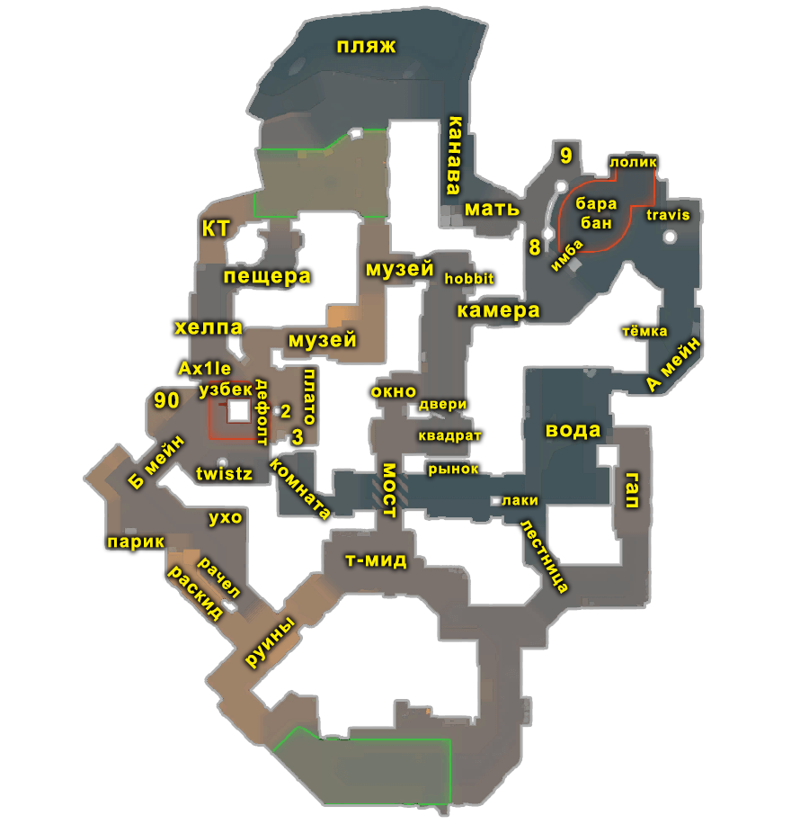

Распик позиций
Разбор распика трёх участков карты в видео: Точка Б (Б-мейн), Точка А (А-плент), Мид.
▶ видео в оригинале
Роли и позиции
Роли за атаку T
Люрк А

Чем занимается на карте:
- Контроль А точки
- Занимается А-мейном
- Помогает занимать комнату
- Доигрывает люрком в А/комнату, если в этом есть необходимость
Для кого подходит: Механически сильным игрокам, которые говорят инфу только по делу, либо иногда предлагают действия под своей точкой.
Люрк Б
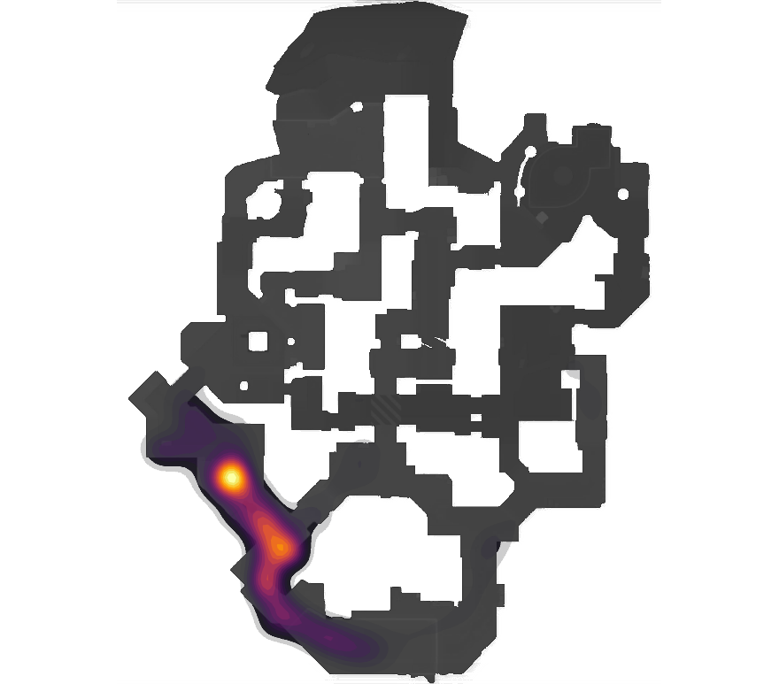
Чем занимается на карте:
- Контроль Б-мейна
- Помогает мид-игроку, если в этом есть необходимость
- Иногда может сыграть агрессивно в паре со свободным игроком либо снайпером
- Есть опция сыграть в паре на миду или сыграть в другой зоне и оставить Б точку без контроля, либо отправить туда AWP
- Доигрывает люрком в Б/мид
Для кого подходит: Игрокам, которые не любят агрессию, также это неплохой спот для капитана. Геймплей не самый интересный, но очень важный для командной игры, необходимо играть умом.
Мид-игрок
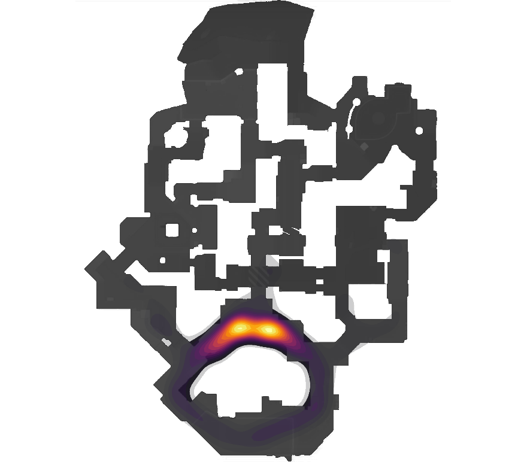
Чем занимается на карте:
- Контроль мида
- Помогает Б-игроку
- Отжимает пространство на миду
Для кого подходит: Агрессивным игрокам, которые грамотно используют гранаты. Хороший спот для активного капитана, так как вы всегда будете понимать, что происходит на карте. Если много говорите и любите брать дуэли — это для вас.
Свободный игрок (по дефолту — комната)
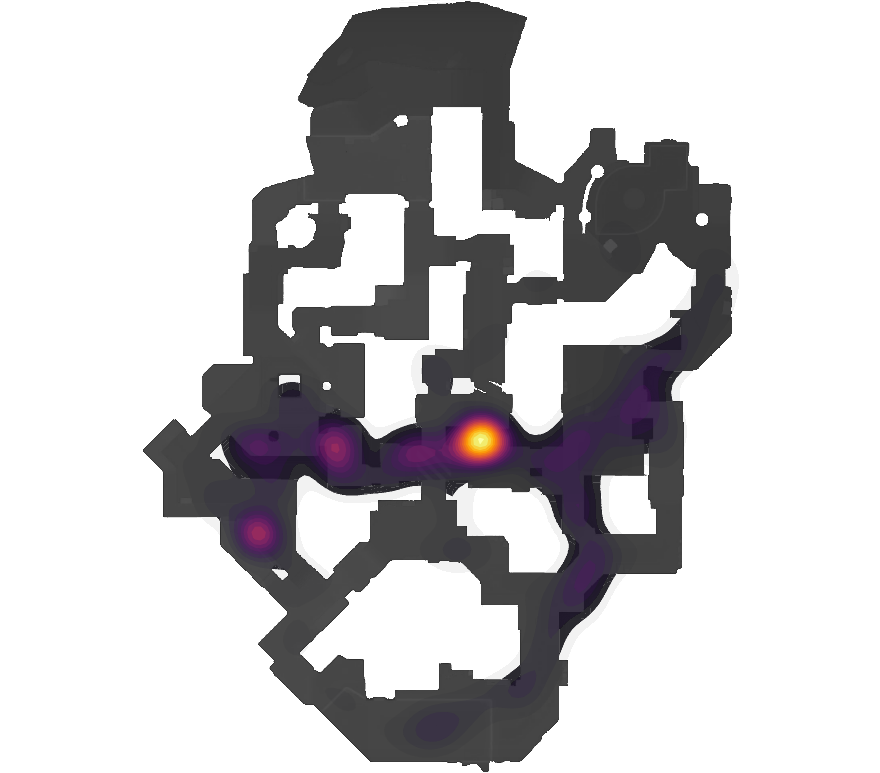
Чем занимается на карте:
- Играя дефолт, занимается комнатой
- За счёт своей свободы может играть вторым мид, вторым А или вторым Б, выходить первым под саппорт-гранаты либо играть в размен — тут уже от скилла
- В основном выходит первым, но в некоторых ситуациях может играть вторым номером (выход на Б 4+1, где 1 — это вы)
Для кого подходит: Если любишь играть первым и создавать свободное пространство для команды — эта роль для тебя. Очень много свободы, необходимо хорошо наводить крестик на голову.
AWP
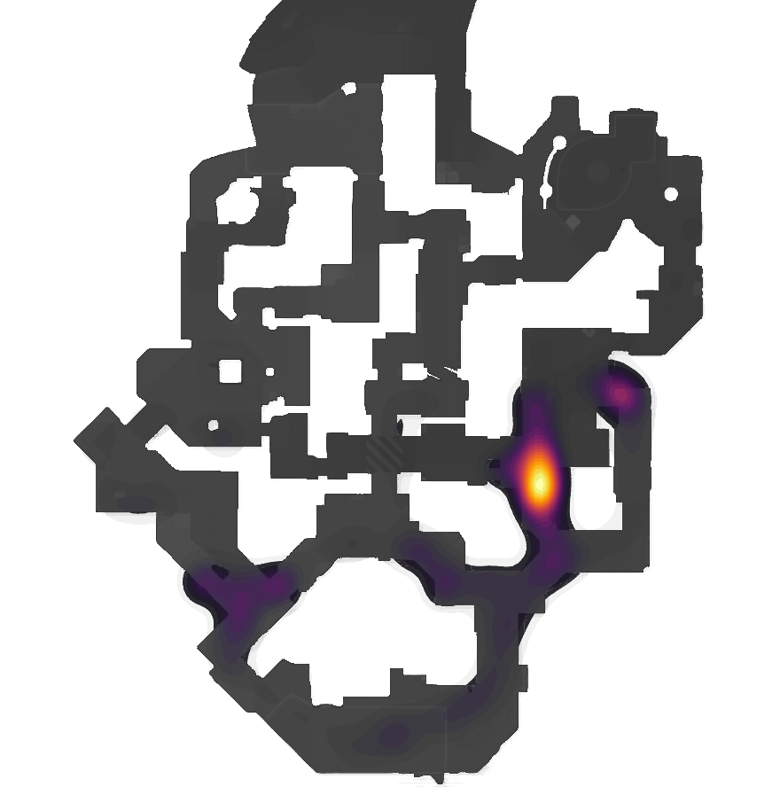
Чем занимается на карте:
- Основной геймплей — контроль комнаты и игра на воде
- У сильного снайпера в арсенале должно быть по 2–3 агрессии на точках А и Б и, конечно, на миду
Роли за защиту CT
| Роль | Примеры про-игроков | Описание |
|---|---|---|
| Опорник А | flamez, ropz, zont1x | Щит А-плента, часто играет в паре с AWP. |
| Опорник Б | Grim, mezii, magixx | Главный на Б, играет в паре с игроком комнаты. Очень важно знать сетапы и правильно их использовать. Сильный менеджмент гранат — твой путь к победе. |
| Мид-игрок | Niko, tabsen, polt | Контроль мида, сетапы с А-игроком или AWP. Важно грамотно использовать смок и молотов, чтобы сдерживать соперников. Часто отдавать мид выгоднее, чем воевать за него. |
| AWP | Zywoo, broky, monesy | Сетапы А и Б — ваш хлеб. Пики мида и с комнаты — ваши энтри. В видео разобрана агрессивная игра на Б, на миду, в комнате (коннекторе) и на А. |
| Игрок комнаты | Spinx, donk, fl1t | Самая боевая роль на этой карте. Важно уметь играть и в агрессию, и в пассивный дифенс. Если любите дуэли — эта роль для вас. |
▶ видео по каждой роли в оригинале
AWP: основные пики по респу
Нужно запомнить все вариации. Левые респы — пик Б, мид, дроп в комнату, буст. Правые респы — пик А, комната с гэпа либо агрессивно в упор.
1. Пик под А, под флешку тиммейта
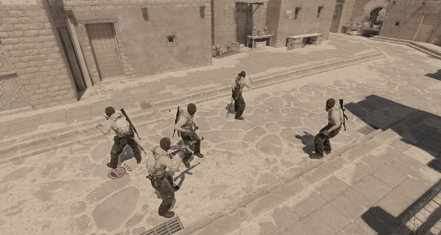
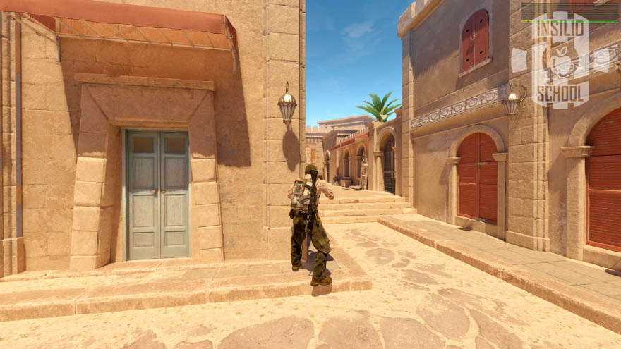
▶ видео в оригинале
2. Пик мида

▶ видео в оригинале
3. Буст мид
Респ не влияет, но если хотите быстро, то все левые можно делать и в лейте.
▶ видео в оригинале
4. Дроп в комнату
Показан для отличного и среднего респа (по видео на каждый).
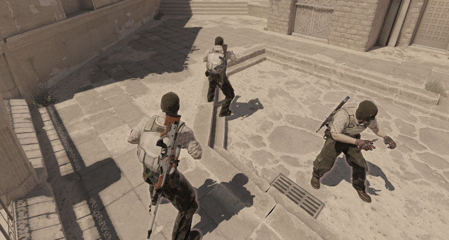

▶ видео в оригинале
5. Пик с гэпа комнаты
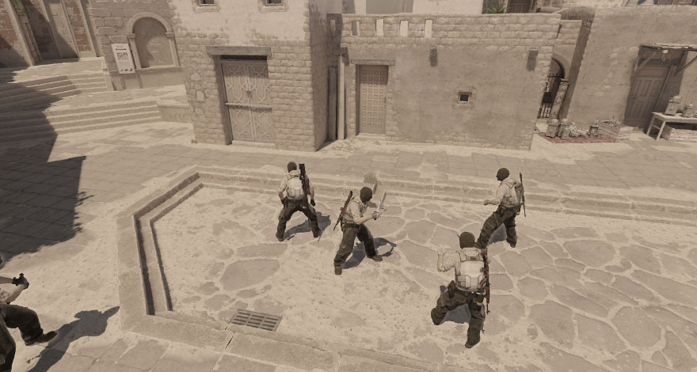
▶ видео в оригинале
6. Пик под Б, по респе (1–2 левый)
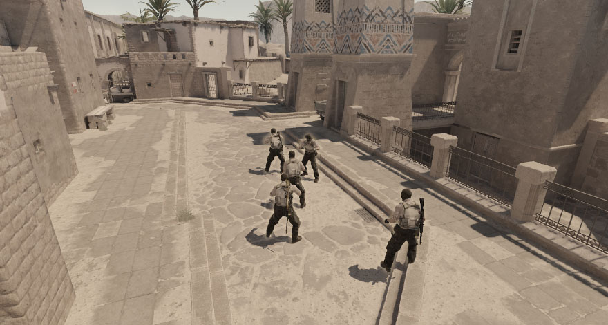
▶ видео в оригинале
7. Фишка от Димы FpSSS
▶ видео в оригинале
Дефолты на Anubis
Общие положения о дефолте — в разделе «Дефолт: зачем и как устроен». Ниже — схемы дефолтов на Anubis.
Дефолты за атаку
1-1-3 (медленный) T
Один человек контролирует Б, один — мид. Кор (тройка игроков) играет на воде, один игрок контролирует А, один работает по комнате. Снайпер помогает игроку комнаты или смотрящему А.
Большинство: доигрывать большинство в точку, лучше всего сплитом. В вариации 2+3 под Б либо 4+1 под А, с люркером в гэпе.
Меньшинство: доиграть меньшинство лучше в точку кором; если вас четверо, можно 3+1, с люркером.
▶ видео в оригинале
2-1-2 (медленный) T
Один игрок контролирует мид, двое под Б играют сетап: рифлер стоит антифлеш, снайпер ждёт поджим Б. При этом соло-игроки напрягают комнату и А точку, провоцируя агрессию от КТ.
Большинство: доиграть ситуацию в точку, лучше всего сплитом. В вариации 2+3 под Б либо 4+1 под А, с люркером в гэпе.
Меньшинство: доиграть ситуацию в любую точку кором. Если вас четверо, можно 3+1, с хитрым люрком. Отличный вариант — выйти контактом в мид, если у соперника нет AWP.
▶ видео в оригинале
3-1-1 (агрессивный) T
Кор играет под Б, пытается найти дуэль. Один игрок на воде (лучше всего с гэпа) контролирует воду и А-прожим. Один игрок контролирует мид.
Большинство: доиграть ситуацию в любую точку по ситуации от энтри-фрагов, также можно доиграть с люркером.
Меньшинство: резко среагировать и выйти в другой плент, где у соперника меньшинство. Либо переждать и разыграть раунд от имеющейся информации.
▶ видео в оригинале
Дефолты за защиту
3-1-1 CT
Снайпер стартует Б, по пути дропая свой смок на мид, отдаёт свой молотов комнатнику.
Цель: принять Б. Если противник играет другую точку, надо прожать Б.
План Б: оставить одного на Б (оставить ему пак гранат) и идти выбивать мид, либо угадывать и стакать А-плент.
▶ видео в оригинале
2-1-2 CT
Снайпер стартует под А, в сетапе с опорником. Игроки Б-плента играют на гранатах.
Цель: принять А-мейн — А-сплит.
План Б: прожим воды с А-мейна и Б-плента, если соперники играют мид.
▶ видео в оригинале (2 версии)
▶ Дефолт на примере команды FaZe Clan — разбор от Никиты DaDte (дополнение к лекции), видео в оригинале
Ретейк
Ретейк А точки CT
Кор должен ретейкать через «мать», основная масса пушит через «8-ку», один игрок может распикивать через «9-ку». Молотов в первую очередь отдаём на Трэвиса; если у нас 2 смока, то один в мейн, другой на бомбу.
▶ видео в оригинале
Ретейк Б точки CT
Стараемся ретейкать под флеш, если кор идёт с хелпы + музей. Последний смок всегда(!) тратим на бомбу. Если понимаем, что основная масса соперников в комнате и у нас нет игрока, который закрывает спину, то смок тратим и туда. В мейн стараемся смок не давать!
▶ видео в оригинале
Пост-плент
Пост-плент позиции (в скобках — цифры, как указано в источнике).
Точка А
Имба (1), Трэвис (1), Барабан (2), Мейн (2)
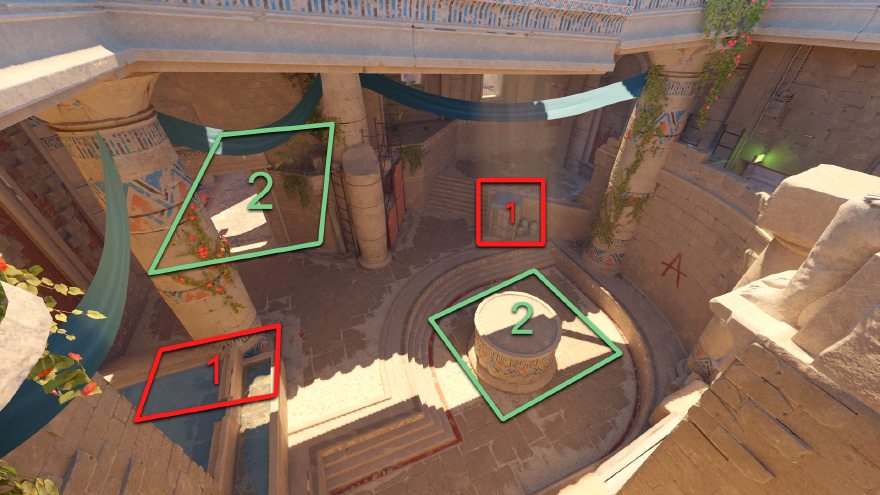
Точка Б
Мейн (1), Комната (2), 90 (2), Твистз (2)
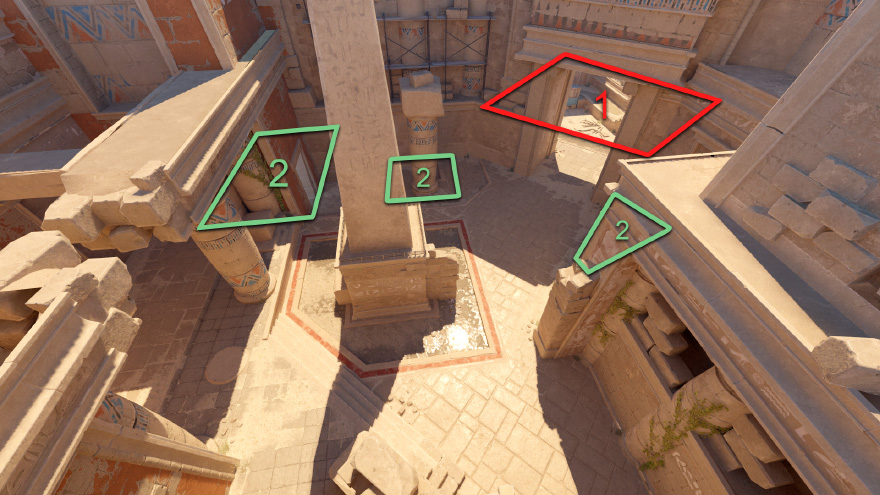
Выход (Execute)
Выход А T
Раскид А-плента лучше всего делать после имитации дефолта, но можно и сразу.
- 2 смока тратим в «камеру» и на «9-ку».
- Молотов за «барабан» + на «8-ку»; до этого раскида нужно выбить А-мейн, после — кинуть молотов за Трэвис.
▶ видео выхода и пример раундов EF–Liquid (7–8 раунды), видео в оригинале
Выход Б T
При раскиде Б-плента всегда стараемся давать 2 смока: основной — левый, второй — правый либо «музей» (зависит от зоны, которую будем занимать). Под флешки первые двое давят плент по правой стенке, пытаются найти опорника, а также чекают все упорные позиции; третий игрок выходит налево и занимает 90. При таком раскиде очень сильным является люркер на воде, который в нужный момент может помочь отбить комнату!
▶ видео выхода и пример раундов Complexity–Pera (8–6), видео в оригинале
Сплиты
Сплит А T
Этот раунд лучше всего делать 4+1, где «кор» играет через мид. Занимаем «квадрат» и «окно»; после таймера ~1:15 это сделать проще, так как у защиты не будет гранат и она, скорее всего, отойдёт в зону «камеры». Далее либо от руки, либо просим тиммейта, который находится под А-плентом, дать смок в музей и под флешку, которая летит над «камерой», — пушим плент А.
Всегда есть возможность оставить одного игрока на миду в качестве «люркера», который будет контролировать спину. «Люркером» может сыграть и игрок, который в соло стоит под А-точкой, но тогда обязательно(!) нужно дочекать А-мейн либо закрыть его смоком и занять другую зону в ответ, например «канаву».
▶ видео и пример раундов EF–Liquid (10–11), видео в оригинале
Сплит Б T
Делаем этот раунд либо 2+3, либо 3+2, можно и 2+2. Идеально, если получится отжать на миду «квадрат» и «окно», когда раунд делается на поздних таймингах. Если играем раунд резко, то просто занимаем воду, для этого нужно потратить базовый смок в «комнату». Игроки под Б ждут агрессию от КТ, после чего кидается смок лево + право, молотов за плент и «музей».
▶ видео и пример раундов Big–NAVI (4–5), видео в оригинале
Парные комбинации
1. Мид занятие T
Комбинация, чтобы отжимать мид. Можно добавить флешку налево! Ожидайте ревил смока от КТ!
▶ видео в оригинале
2. Мид комба CT
Сетап на миду для приёмки!
▶ видео в оригинале
3. Выпад мид CT
Агрессия на миду, можно делать и в смок. Отличный вариант, чтобы перевернуть игру!
▶ видео в оригинале
4. Мид занятие + гранаты для сплита А T
Качественные гранаты, которые облегчат сплит А; можно использовать и соло, главное — просить тиммейтов занимать окно + квадрат, благо в нынешней мете это делать очень просто.
▶ видео в оригинале
5. Дабл пик Б-мейна T
Агрессия под Б, нужен смок лево + флеш + молотов. Два игрока пикают по респу, снайпер распикивает дефолт + плент, игрок с рифлой чекает упор и так же пикает с AWP-ером, в паре.
▶ видео в оригинале
6. Занятие А-мейна T
Простая комба, чтобы отжать А-мейн. Необходима лишь флешка + смок и хороший респ.
▶ видео в оригинале
7. Мид занятие, под интересные гранаты T
Супер-комба для игрока А. Легко можно занять мидл в среднем тайминге. В этой вариации можно добавить смок в окно, но лучше играть без него, контактом.
▶ видео в оригинале
8. Отбитие комнаты T
Самая сильная комбинация, чтобы занять комнату.
▶ видео в оригинале
9. Отжатие воды CT
Задача комбинации — полностью занять пространство на воде, чтобы сломать раунд Т-стороне. Один человек кидает молотов + флешки, остальные клешнями зажимают воду с А-мейна, мида и комнаты.
▶ видео в оригинале
10. Пик двери мид под флеш CT
Комба-ловушка на миду, отлично подходит, если до этого вы часто играли мид в отдачу. Очень простая, но рабочая.
▶ видео в оригинале
11. Пик под флеш Б-мейна CT
Самая популярная комбинация на карте, даёт больше всего информации на поле боя. Если сделать выпад в хороший тайминг, можно понять, какие планы у атаки на этот раунд.
▶ видео в оригинале
12. Отжатие Б-мейна CT
Комбинация, чтобы полностью отжать пространство под Б-точкой. Советую под это что-то делать и на другом участке карты: стакнуть 2-мид или 2–3 А, так как большинство игроков атаки после такой агрессии будет реагировать в мид или А.
▶ видео в оригинале
Таймкоды записей лекций
Записи лекций объединены с текстом выше. Лекция 4 («Парные комбинации», запись 21 июля) — без таймкодов. Ниже — навигация по записям.
Запись 1 (30 июня): Дефолт. Роли. Anubis
| Таймкод | Тема |
|---|---|
| 0:00 | Вступление |
| 2:38 | Рачел про правила |
| 5:40 | Как будут проходить лекции и занятия |
| 7:59 | Турнир школы Инсилио |
| 8:45 | Призы у тренеров |
| 9:11 | Кружка |
| 9:39 | Система школы |
| 11:26 | Про пропуски тренировок |
| 11:43 | Карта |
| 11:47 | Кто такой DaDte |
| 12:17 | Про лекции, домашку и записи |
| 13:20 | Тема лекции №1 (дефолт и роли) |
| 14:10 | Начало лекции |
| 14:19 | Термины |
| 17:57 | Почему важно знать дефолт |
| 19:21 | Старт, середина и конец дефолта |
| 22:02 | Типы дефолтов |
| 22:42 | Позиции на Anubis |
| 24:19 | Дефолт атаки 1-1-3 |
| 27:40 | Дефолт атаки 2-1-2 |
| 29:07 | Дефолт атаки 3-1-1 |
| 30:45 | Отсутствие снайпера на Анубисе |
| 33:13 | Про тренеров |
| 33:55 | Дефолт защиты 3-1-1 |
| 37:03 | Дефолт защиты 2-1-2 |
| 40:17 | Почему важно знать все роли (на опыте s1ren) |
| 44:52 | Роли защиты на Анубисе с примерами |
| 47:35 | Подробнее про мидл |
| 48:47 | Роли за атаку |
| 49:13 | Люрк А |
| 50:24 | Люрк Б |
| 51:26 | Мид игрок |
| 52:05 | Свободный игрок |
| 53:28 | Домашка |
| 54:35 | Ответы на вопросы |
| 54:53 | Следующая тема лекции |
| 56:02 | Про мираж и тимспик |
| 56:28 | Кому нужно задавать все вопросы |
| 57:33 | «Как определить позицию и роль?» |
| 57:49 | «Где найти гайд на тимспик?» |
| 58:40 | «Сколько нужно играть фейсит?» |
| 58:56 | «Где купить джерси Инсилио?» |
| 59:33 | «Почему нет дефолта за КТ 2-1-2?» |
| 59:52 | «Какая работа происходит между игроком и тренером?» |
| 1:00:33 | «Какие сервера будут на праках?» |
| 1:00:50 | «Как выцепить Рачела на вопросы?» |
| 1:01:13 | «Почему террам на Анубисе легче выигрывать раунды?» |
| 1:02:41 | «Снайпер — свободный игрок?» |
| 1:02:58 | «Как не теряться во время большого кол-ва инфы в ТС?» |
| 1:03:23 | Про тренировку аима |
| 1:04:12 | «Как играть стабильно?» |
| 1:05:02 | «Будет ли роль капитана?» |
| 1:05:27 | «Как написать тренеру по любому вопросу?» |
| 1:05:45 | «Как играется сплит?» |
| 1:06:17 | «Где играет капитан за КТ?» |
| 1:06:46 | «С кем играются праки?» |
| 1:07:46 | Остальные вопросы |
| 1:20:13 | Конец |
Запись 2 (6 июля): Выход. Пост-плент. Ретейк
| Таймкод | Тема |
|---|---|
| 0:00 | Вступление |
| 1:24 | Видос от Дадте про дефолты |
| 2:12 | Уточнение по призам (медали, кружки, бонусы) |
| 4:14 | Про турниры |
| 5:28 | Про академку |
| 6:45 | Начало лекции |
| 8:17 | Ретейк А точки |
| 14:53 | Ретейк Б точки |
| 20:49 | Пост-плент на А точке |
| 25:02 | Пост-плент на Б точке |
| 26:53 | Выход на А |
| 35:02 | Выход на Б |
| 42:03 | Сплит А |
| 48:49 | Сплит Б |
| 54:38 | Домашка |
| 56:52 | Ответы на вопросы |
| 57:10 | На каком сервере проходят турниры? |
| 57:20 | Чьи демки на миду смотреть? |
| 57:45 | Можно ли ретейкать 3vs3? |
| 58:11 | Про сплиты |
| 58:56 | Можно ли собрать команду не только из своей группы? |
| 59:17 | Тема следующей лекции |
| 1:00:16 | Как на турике будут рассматриваться команды по эло |
| 1:00:32 | Будут ли собираться женские команды? |
| 1:01:43 | Как откидываются гранаты при сплите? |
| 1:02:10 | Отправят ли призы в Европу? |
| 1:02:22 | Демки каких снайперов стоит смотреть на Анубисе? |
| 1:03:06 | Когда будут психологи? |
| 1:03:40 | Где в основном играет капитан на Анубисе? |
| 1:04:07 | Как влияет возраст на шанс попасть в команду? |
| 1:05:21 | Можно ли заранее записаться на следующий курс? |
| 1:05:38 | Видосы по микроигре, экономике, дефолтам |
| 1:06:49 | Когда второй курс? |
| 1:07:19 | Как тренер влияет на выбор команды на турик |
| 1:08:21 | Про второй курс и приоритет над новыми участниками |
| 1:08:49 | «Фейз смок не работает» |
| 1:09:19 | Где найти настройщика компа под игру? |
| 1:09:38 | Почему на проф уровне нет команд с девушками? (4 парня 1 девушка) |
| 1:10:49 | В каких ситуациях стоит развернуться перед плентом? |
| 1:11:49 | Какие награды будут ребятам, хорошо играющим праки? |
| 1:12:30 | Критерии для джуниор состава |
| 1:13:40 | Есть ли будущее у 100пинг-плеера без переезда? |
| 1:14:24 | Кто главный за набор состава инсилио |
| 1:15:34 | Про кружки |
| 1:15:42 | Конец |
Запись 3 (13 июля): Общие правила. Правила карты
| Таймкод | Тема |
|---|---|
| 0:00 | Вступление |
| 1:25 | Про видосы от Дадте |
| 4:28 | Про рефералки |
| 4:52 | Набор на следующий месяц |
| 5:06 | Для капитанов и команд |
| 6:18 | Вопросы под лекцией |
| 7:00 | Для снайперов |
| 7:43 | Про гайд по экономике |
| 9:20 | Начало лекции |
| 11:35 | Правило атаки #1 (КТ без авика) |
| 13:27 | Правило атаки #2 (поздний контакт) |
| 15:36 | Правило атаки #3 (первый — кор) |
| 17:58 | Правило атаки #4 (контакт люрка) |
| 19:33 | Правило атаки #5 (бомба под тиммейта) |
| 21:00 | Правило атаки #6 (считать секунды) |
| 22:12 | Правило атаки #7 (кучность при заходе) |
| 23:51 | Правило атаки #8 (считать смоки) |
| 25:06 | Правило защиты #1 (смок на бомбу) |
| 26:05 | Правило защиты #2 (играть вместе) |
| 28:18 | Правило защиты #3 (первый — кор) |
| 29:34 | Правило защиты #4 (рисковать) |
| 32:14 | Правило защиты #5 (игра от зоны) |
| 34:01 | Правило защиты #6 (против +w) |
| 36:12 | Правило защиты #7 (агрессия и отдача) |
| 38:06 | Правила на Анубисе |
| 38:18 | Правило КТ #1 (поздний мид) |
| 39:58 | Правило КТ #1.1 |
| 41:32 | Правило КТ #2 (3Б/2А = авик отдаёт смок) |
| 42:44 | Правило КТ #3 (не играть соло упор А мейн) |
| 44:07 | Правило КТ #4 (мидер разменивает гранаты) |
| 45:12 | Правило КТ #5 (нужно драться за мейн) |
| 46:55 | Правило КТ #6 (кончились гранаты на Б — играй пассивно) |
| 48:07 | Правило КТ #7 (прожимы делать при потенциале) |
| 50:50 | Правило Т #8 (атака занимает две зоны) |
| 53:33 | Правило Т #9 (соло вода начинает с гэпа/лестницы) |
| 54:14 | Правило Т #10 (нет авп в комнате — дай смок) |
| 54:50 | Правило Т #11 (КТ пушит воду — занимай мид) |
| 56:00 | Домашка |
| 56:43 | Ответы на вопросы |
| 57:00 | Что получит топ 5 у тренеров? |
| 57:06 | Объяснение 4 правила на Анубисе |
| 57:55 | Что получит каждое место из топ 5 тренера |
| 58:44 | Будет раздел с разбором пистолеток? |
| 59:05 | Какая карта будет в августе? |
| 59:20 | На каком сайте сделать такой радар? |
| 59:27 | Будет гайд про посадку за ПК? |
| 1:00:07 | Ещё раз про карту в августе |
| 1:00:27 | Что делать с пингом? |
| 1:00:40 | Что делать, если тиммейты молчат или оскают? |
| 1:01:11 | Про оверагрессию |
| 1:02:01 | Тема следующей лекции — комбинации |
| 1:02:33 | Сетап на миду за КТ |
| 1:03:24 | Что делать, если не летит? |
| 1:03:37 | Каким образом определяется топ 5 у тренера? |
| 1:03:41 | Про дмы/ботов/тренировку стрельбы |
| 1:05:20 | Будет ли урок для снайперов? |
| 1:05:38 | Как ловить фокус на игре? |
| 1:05:59 | Рачел залетит на турнир |
| 1:06:57 | Какие ещё гайды будут? |
| 1:07:30 | Про занятие позиции «мать» |
| 1:08:47 | Как играть с холодными руками? |
| 1:09:18 | Конец лекции |